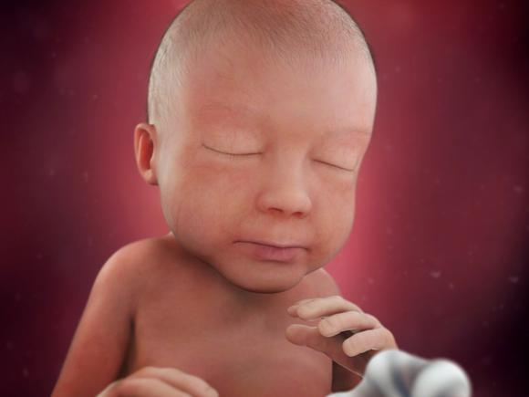

Third Trimester
Weeks 28-39
**Tap each image for more information**
Your baby's eyesight is developing, which may enable her to sense light filtering in from the outside. She can blink, and her eyelashes have grown in. Your baby is the size of a large eggplant.
Your baby's muscles and lungs are busy getting ready to function in the outside world, and his head is growing to make room for his developing brain. Your baby is the size of a butternut squash.
Your baby is surrounded by a pint and a half of amniotic fluid, although there will be less of it as she grows and claims more space inside your uterus. Your baby is the size of a large cabbage.
Your baby can now turn his head from side to side. A protective layer of fat is accumulating under his skin, filling out his arms and legs. Your baby is the size of a coconut.
You're probably gaining about a pound a week. Half of that goes straight to your baby, who will gain one-third to half her birth weight in the next seven weeks in preparation for life outside the womb. Your baby is the size of a large jicama.
The bones in your baby's skull aren't fused yet. That allows them to shift as his head squeezes through the birth canal. They won't fully fuse until adulthood. Your baby is the size of a pineapple.
Your baby's central nervous system is maturing, as are her lungs. Babies born between 34 and 37 weeks who have no other health problems usually do well in the long run. Your baby is the size of a cantaloupe.
It's getting snug inside your womb! Your baby's kidneys are fully developed, and his liver can process some waste products. Your baby is the size of a honeydew melon.
Your baby is gaining about an ounce a day. She's also losing most of the fine down that covered her body, along with the vernix casosa, a waxy substance that was protecting her skin until now. Your baby is the size of a head of romaine lettuce.
Your due date is very close, but though your baby looks like a newborn, he isn't quite ready for the outside world. Over the next two weeks his lungs and brain will fully mature. Your baby is the size of a bunch of Swiss chard.
Are you curious about your baby's eye color? Her irises are not fully pigmented, so if she's born with blue eyes, they could change to a darker color up until she's about a year old. Your baby is the size of a leek.
Your baby's physical development is complete, but he's still busy putting on fat he'll need to help regulate his body temperature in the outside world. Your baby is the size of a mini watermelon.